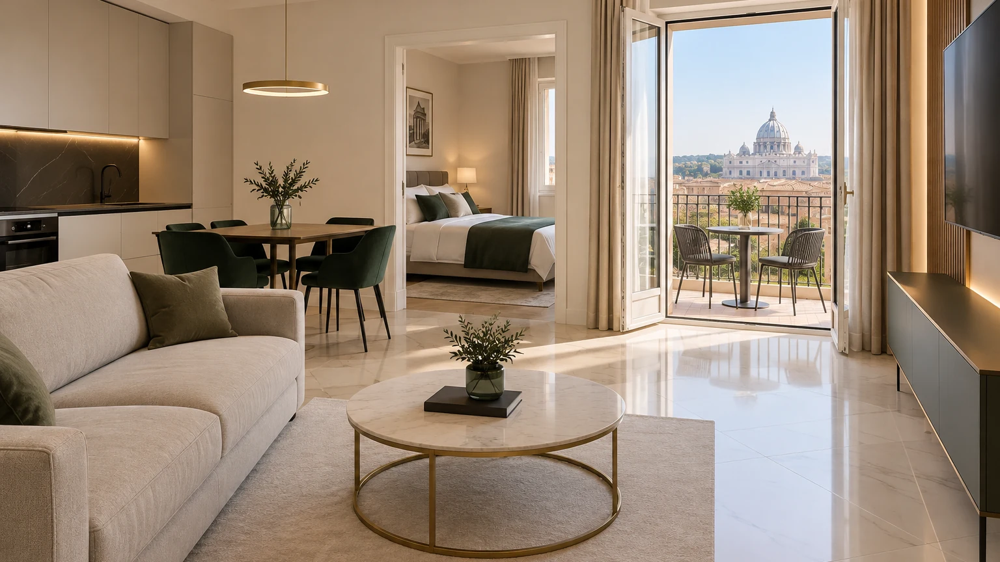

Per chi gestisce già
Lavoriamo anche per altri property manager e per chi gestisce da sé. Non siamo concorrenti: siamo un braccio operativo. Chi ci chiama non ci sta dando le chiavi della sua attività: ci sta togliendo il lavoro più difficile da coprire nei fine settimana e nei cambi stretti.
Facciamo pulizie anche per attività commerciali e di ristorazione.
Il prezzo lo diciamo qui, non dietro un modulo. Per metrature fuori standard, cambi notturni o locali commerciali si guarda insieme.
Bastano due righe. Rispondiamo con un prezzo, non con una presentazione.
Scrivici ora Chiama